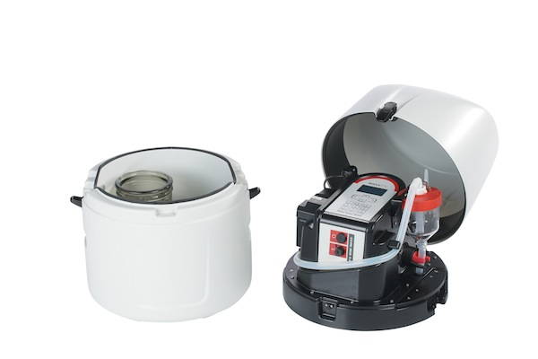
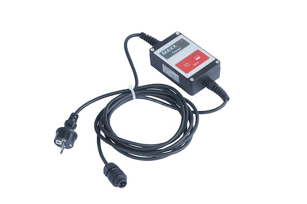

P6 mini Maxx Vacuum
| Type | Portable sampler |
| Housing | ABS / PP |
| Thermo-Insulation | Insulated lower part (sample compartment) (insulation thickness 22 - 33mm) |
| Control | Microprocessor control, Sleep-Mode (<5mA), power supply 8-16 V foil keyboard (with keys 0-9, ESC, ENT, cursor), graphical display (128*64 Pixel), back lit |
| Data logger | 3000 entries, non-volatile data memory; storage of sampling and malfunction data like sample extractions, bottle changes, messages, external signals. optional with WEB-board 100 MB (2 Year ring memory-FIFO at 1 min interval) |
| Programming | 12 freely programmable user programs, with function to link programs. |
| Program start options | - IMMEDIATELY; - DATE/TIME - WEEKDAY/TIME; - BY AN EXTERNAL SIGNAL |
| Program End/Stop options | End of sampling program - AFTER 1 RUN - AFTER X RUNS - CONTINUOUS OPERATION - DATE/TIME |
| Pause mode | Interruption of program run at any time |
| Overfilling protection | Adjustable from 1–999 samples/bottles |
| Interval setting | 1 min. to 99 h 59 min. in steps of 1 minute |
| Sampling method | - Vacuum system 20-350 ml |
| Pulse setting | 1 to 9999 pulses/sample |
| Manual sample extraction | on Possible at any time without interrupting the current program run |
| Program protection | Up to 5 years after voltage loss |
| Interface | Mini-USB, RS 232 optional: Ethernet RJ45, SDI-12 |
| Overfilling protection | Adjustable from 1–999 samples/bottles |
| Wetted materials | PC, PVC, Silicone, POM, PE, SS304 |


